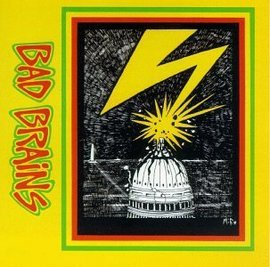

Bad Brains (album)
From The Giant: The Definitive Obey Giant Site
From Wikipedia:
Bad Brains is the second full-length studio album by Bad Brains. It is widely considered one of the most important albums in the history of punk rock.
When the album was unveiled in 1982 on ROIR records, fans and critics alike were stunned to learn that the musicians behind this album - one of the heaviest albums of all time upon its release - were religious African American Rastafarians who also were skilled at reggae. The album was a crucial step in the formation of hardcore punk and the eventual fusion of hard rock and reggae adopted later by bands like Fishbone and 311.
Many of the album's tracks were re-recorded for their 1983 follow-up, Rock for Light.
Track listing
1. "Sailin' On" – 1:55
2. "Don't Need It" – 1:07
3. "Attitude" – 1:19
4. "The Regulator" – 1:07
5. "Banned in D.C." – 2:12
6. "Jah Calling" – 2:31
7. "Supertouch/Shitfit" – 2:30
8. "Leaving Babylon" – 4:10
9. "Fearless Vampire Killers" – 1:07
10. "I" – 2:05
11. "Big Take Over" – 2:57
12. "Pay To Cum" – 2:25
13. "Right Brigade" – 2:27
14. "I Luv I Jah" – 6:24
15. "Intro" – 0:45
Credits
H.R. - Vocals
Dr. Know - Guitar, Backing Vocals
Daryl Jenifer - Bass, Backing Vocals
Earl Hudson - Drums, Backing Vocals
Other credits
Recorded by Jay Dublee and mixed by Jay Dublee with the assistance of Bad Brains. Logo Art created by Donnell Gibson and Jay Jones, with photography by Laura Levine. Concept by Neil Cooper. All material was recorded at 171-A Studios, N.Y.C, during August, September, and October of 1981, except "Pay To Cum," I Luv I Jah," and "Jah Calling Dub" recorded live at 171-A on May 16, 1981.
The cover to Bad Brains served as the inspiration, although not the exact model, for Shepard's 2002 work Bad Brains.
|  |
{kind=link}
{kind=link}
© Copyright |
|---|
| This page contains an image or images of drawings, paintings, photographs, prints, or other two-dimensional works of art, for which the copyright is presumably owned by either the artist who produced the image, the person who commissioned the work, or the heirs thereof. It is believed that the use of low-resolution images of works of art for critical commentary on the work in question, the artistic genre or technique of the work of art, or the school to which the artist belongs on the English-language website thegiant.org, hosted on servers in the United States, qualifies as fair use under United States copyright law. |